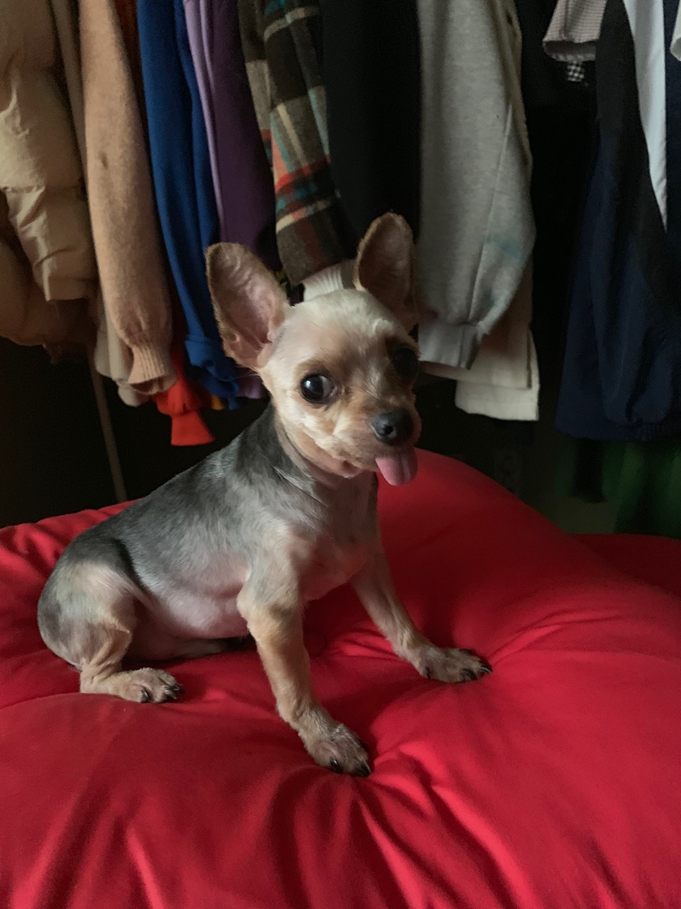
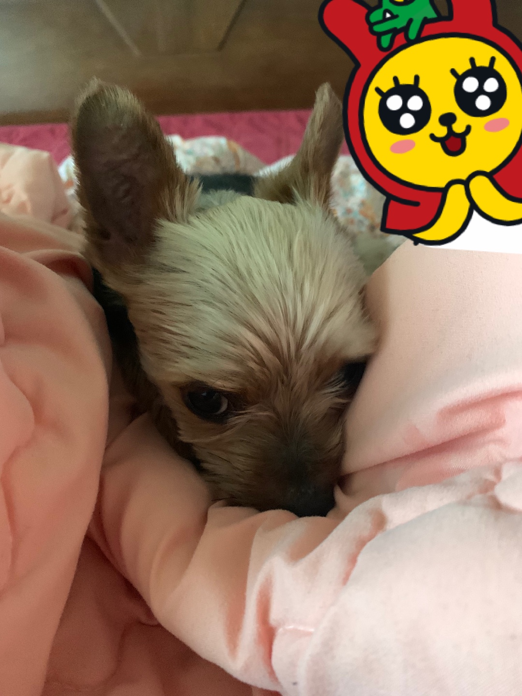

요크셔테리어
요크셔 테리어는 1850년대에 처음 등장한 견종으로 옛 견종인 '블랙 앤 탄 테리어'에서 유래되었다.
기다란 털이 코에서부터 꼬리 끝까지 몸 양쪽에서 균등하게 나뉘어 아래로 곧게 뻗은 것이 특징이다.
목차
특징
작고 귀여운 얼굴과 반짝이는 긴 털을 갖고 있는 요크셔테리어는 ‘요키’라는 귀여운 약칭으로도 불리며 국내에서 많이 키우는 품종 1, 2위를 다툰다.
똑똑하고 사랑스러운 가족이 될 수 있는 훌륭한 자질을 갖고 있다. 주인을 잘 따르고 가끔은 사납게 짖으며 집을 잘 지키기도 한다.
하지만 고집이 세고 영악한 부분이 있어서 자칫 집안의 버릇없는 공주나 왕자가 될 수 있으므로 주의해야 한다.
외로움을 심하게 타는 편이라 주인과 떨어져 있기 싫어하고 주인에 대한 소유욕이 크고 질투심도 강한 편.
집안에 어린아이가 있을 경우 질투심을 더 심하게 느끼기도 한다.
집안에서 개와 함께하는 시간이 많은 사람이 키우기 적합하며 운동량이 적어 좁은 집안에서도 잘 적응한다.
요키는 개를 꾸미기 좋아하는 젊은 여성 애견인들이 많이 키우는데 애견책자에서 본 것처럼 멋진 털로 가꾸려면 매일 빗질해주는 시간을 할애해야 한다.
어쩌면 주인과 함께하는 시간을 많이 갖고 싶어하는 특성 때문에 이러한 점이 더욱 강해진 것은 아닌가 싶다. 털관리에 자신이 없다면 짧게 밀어줄 도리밖에 없다.
건강관리
슬개골 탈구 같은 관절질환이 많으므로 어릴 때 영양공급을 충분히 해준다.
주의할점
잘 짖는 편이므로 어릴 적부터 짖지 못하도록 훈련시킨다. 많은 운동이 필요하지는 않으나 하루에 10분씩 가벼운 산책을 시켜 스트레스를 풀어준다.
요크셔 테리어
영국에서 공장의 설치류를 잡기 위한 목적으로 개량한 개의 한 품종이다
샘플


성격/행동